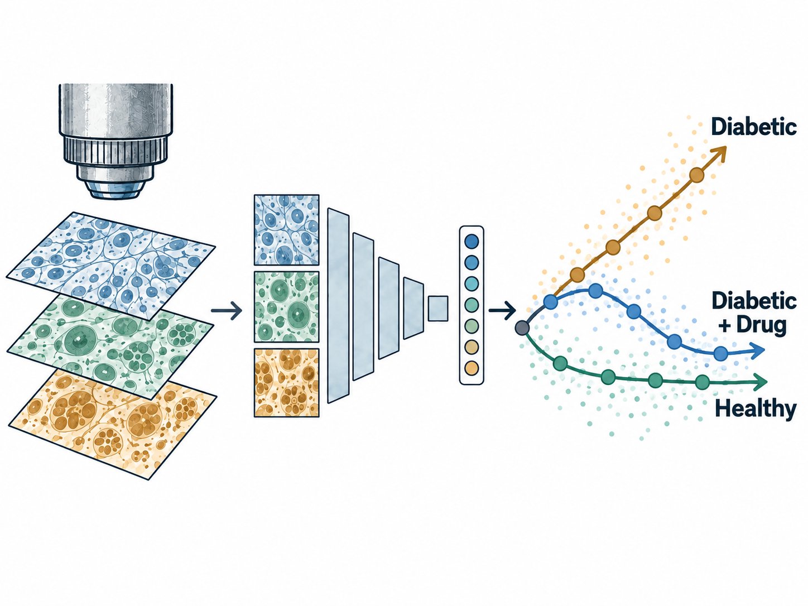
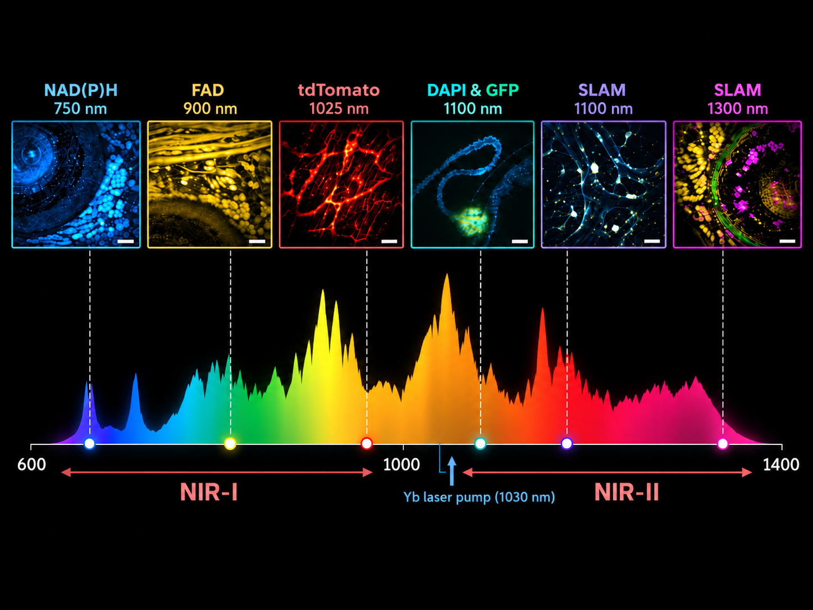
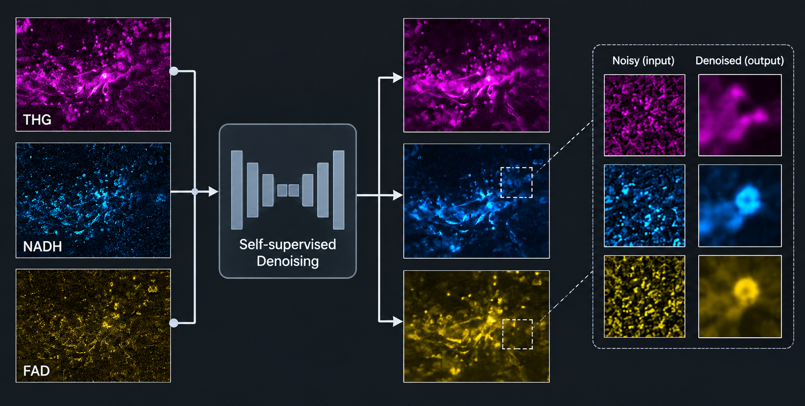
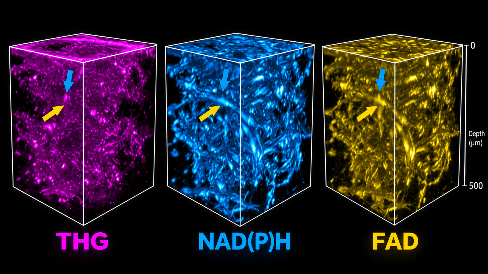

Research
My work focuses on optical and imaging systems that combine physical insight, high-performance instrumentation, and learning-based analysis.

Representation Learning from Label-Free Imaging
2026 – Present
AI for scienceLabel-free microscopyDrug screening
Developing representation-learning methods for high-dimensional label-free images of 3D liver organoids, enabling phenotyping beyond conventional intensity and morphology metrics.
The imaging and learning pipeline is being translated toward diabetes drug screening and quantitative treatment-response analysis.

High-Speed Three-Photon Fluorescence Lifetime Microscope
2025 – Present
Optical systemsHigh-speed electronicsInstrument control
Built a three-photon fluorescence lifetime microscope integrating femtosecond excitation, galvo scanning, hybrid photodetection, high-speed digitization, and synchronized motion and control electronics.
Developed an acquisition and processing architecture with a 5 GS/s analog sampling rate and 7 GB/s data throughput, enabling single-shot fluorescence lifetime imaging with detection sensitivity down to the single-photon level.

Tunable Supercontinuum for Multicolor Volumetric Imaging
2025 – 2026
Fiber-shaper designDispersion controlMulticolor imaging
Designed and fabricated the fiber shaper for a tunable supercontinuum source, and contributed to experimental-design discussions, data validation, and interpretation. The approach combines high-order-mode excitation with controlled fiber bending to tune the spectrum while preserving a stable, Bessel-like spatial profile.
The collaborative system spans 700–1,350 nm and provides a roughly sixfold extension in depth of focus, enabling multicolor volumetric multiphoton microscopy with subcellular detail.
Publication: Newton 2, 100562 (2026).

High-Throughput Imaging System
2024 – 2026
Nonlinear opticsFiber opticsVolumetric imaging
Developed a self-localized ultrafast pencil beam that extends the depth of focus by more than 10× while preserving near-diffraction-limited lateral resolution, enabling higher-throughput volumetric imaging.
Integrated the beam into a high-NA (NA = 1.05) multiphoton microscope, reducing acquisition time from 25 minutes to 1 minute for a 2 mm × 2 mm × 50 µm volume while maintaining subcellular resolution.
Publication: Nature Methods 23, 1024–1036 (2026).

Physics-Informed Self-Supervised Denoising
2024
Self-supervised learningLow-SNR imagingMultimodal imaging
Studied how image-formation physics determines whether cross-modal information helps or hurts reconstruction. Implemented a blind-spot U-Net / Noise2Void pipeline that learns from single noisy observations without ground-truth images, targeting dynamic imaging where repeated identical measurements are unavailable.

Deep and Dynamic Metabolic and Structural Imaging
2023 – 2024
Three-photon imagingMetabolic imagingOptical instrumentation
Co-conceived the project and helped build the optical setup for deep and dynamic label-free imaging. The system combines a compact fiber shaper with a multimode-fiber source to deliver high-peak-power excitation at 1,100 nm.
The collaborative work extended NAD(P)H imaging beyond 700 µm in living engineered human microtissues. An eightfold increase in pulse energy also enabled faster imaging of monocyte behavior, combining metabolic and structural contrast in intact living systems.
Publication: Science Advances 10, eadp2438 (2024).

Adaptive Ultrafast Optical System
2022 – 2024
Ultrafast opticsProgrammable optomechanicsAutomated control
Developed an integrated optical platform combining femtosecond lasers, programmable optomechanics, spectroscopy, autocorrelation, beam imaging, and automated control for real-time optimization of broadband optical output.
Demonstrated control of optical spectrum, pulse duration, and beam profile across two optical octaves, reaching 0.72 MW peak power and enabling up to 15× higher nonlinear imaging signal.
Publication: Nature Communications 15, 2031 (2024).